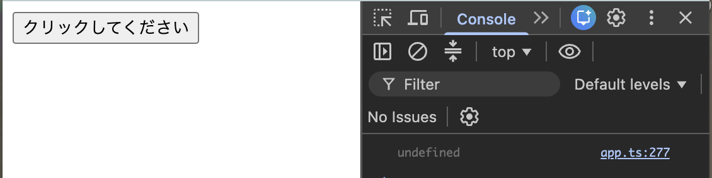
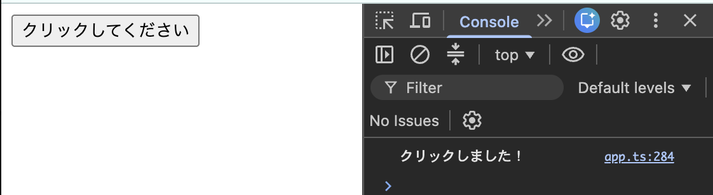

メソッドデコレーター（Autobind）
メソッドデコレーターはPropatyDescriptorの設定を値として返すことができる。 戻り値として返すPropertyDescriptorの内容よって、もともとのメソッドの設定や処理を変えることができる。 メソッドデコレーターのPropertyDescriptorのプロパティの種類 value: 値や関数をセットできる。値や関数をそのまま保持する。 writable: プロパティが書き込み可能かどうか制御できる configurable: プロパティの設定を変更・削除できるか制御できる enumerable: オブジェクトをループしたときに、このプロパティが出力されるかどうか制御できる get/set：必要なときだけ設定する。valueと同時に使えない。 get->プロパティの値が読み取られる度に実行される処理を定義 set->プロパティに値が設定される度に実行される処理を定義 メソッドデコレーターの設定を変更する例として、Autobindデコレーターを作成する。 まずは、ボタンをクリックすると「クリックしました！」というメッセージが、コンソールに出力される機能で動作を確認していく。
<body>
<div id="app"></div>
<button>クリックしてください</button>
</body>
// ボタンがクリックされた時に起動する動作を定義
class Printer {
msg = 'クリックしました！';
showMessage() {
console.log(this.msg);
}
}
// オブジェクト生成
const p = new Printer();
// ボタンの要素を取得
const button = document.querySelector('button')!;
// showMessageメソッドを実行
button.addEventListener('click', p.showMessage);
このコードではメッセージは出力されす、意図した動作はしない。以下のように、undefindとなる。

なぜなら、button.addEventListener('click', p.showMessage)の部分で、addEventListenerのコールバック関数にp.showMessageを渡しているから。 このp.showMessageは、「関数」を取り出しているだけで、Printerクラスの情報は持っていない。 逆にEventの対象となった要素(button)の情報を持っているので、addEventLitenerがshowMessageを呼び出す時、showMessageのthisはbuttonクラスを指すことになる。しかしbutton.msgは存在しないのでundefindとなる。 この解決策として、button.addEventListener('click', p.showMessage.bind(p));と修正する。 bindは、「thisを指定したオブジェクト(p)に固定した、新しい関数を作る」メソッドなので、bind(p)を入れるとthisはpオブジェクトを参照するようになる。 このbindをいちいち定義するのは面倒なので、メソッドが呼び出されたらそのメソッドのthisは、所属するクラスを自動で参照する「Autobindデコレーター」を作成する。
class Printer {
msg = 'クリックしました！';
@Autobind
showMessage() {
console.log(this.msg);
}
}
// 対象メソッドの実行時に、メソッド内のthisがメソッドが所属しているオブジェクトを自動で参照する機能
function Autobind(_target: any, _methodname: string, descriptor: PropertyDescriptor) {
// 元のメソッドのオブジェクトを取り出す
const originalMethod = descriptor.value; //function showMessage() {console.log(this.msg);}
// このデコレーターが返却するPropertyDescriptorを作成する
const adjDescriptor: PropertyDescriptor = {
// プロパティを定義
configurable: true,
enumerable: false,
// getterを追加(元のプロパティにはない)
// このプロパティのvalueをbind済みの関数に設定して、getから返す
get() {
// bindを行った後の関数を作成
const boundFn = originalMethod.bind(this); //showMessageのthisに呼び出し元のオブジェクトが設定される
return boundFn;
}
}
return adjDescriptor;
}
get()内のthisは、getメソッドを呼び出したオブジェクトを参照する。 このgetメソッドは、p.showMessageが評価されたタイミングで呼び出され、thisをpでbindした状態でaddEventListenerに設定される。 つまり実行の順序は以下のとおり。 ① addEventLitenerのp.showMessage が評価される ↓ ② ＠Autobindにより新しく定義されてるgetterを発見、実行する ※この時点ではp.showMessageはpからアクセスされる ↓ ③ bind(this = p)した関数を作る ↓ ④ EventListenerに登録 [例]button.addEventListener('click', boundFn); ↓ ⑤ ブラウザからボタンをクリックされる ブラウザはis = buttonで呼び出そうとする ↓ ⑥ bind済み関数(showMessage.bind(p))が実行される ＠Autobindで正しく起動するようになった。

このように、メソッドデコレーターでは、新しいPropertyDescriptorを作成して返すことで、メソッドの動作やプロパティの設定を変更できる。